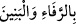
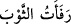
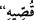
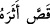

imtisal, bununla sağlanır. Mûsâ (a.s.)’ın kızkardeşinin ismi; Îsâ (a.s.)’ın annesinin
ismine uygun olarak Meryem binti İmran’dır. Eşinin ismi ise Galib b. Yûşâ’dır.
Bazıları demiştir ki: Doğrusu, isminin Meryem değil Külsüm olmasıdır. Çünkü
Zübeyr b. Bekkâr’dan rivâyet edildiğine göre, Hatîce (r.anhâ) hasta iken Rasûlullah
(s.a.) onun yanına girip şöyle buyurdu: “Ya Hatîce! Bilir misin, Allah cennette beni,
seninle beraber İmran kızı Meryem, Mûsâ’nın kızkardeşi Gülsüm -ki onun amcasının
oğlu Kârûn Kimyâ’dır- ve Firavun’ın karısı Âsiye ile evlendirdi.” Hatîce (r.anhâ) dedi
ki: “Ya Rasûlallah! Allah mı sana bunu haber verdi.” Peygamber (s.a.): “Evet” dedi.
Bunun üzerine Hatîce (r.anhâ) “__WORD__ (Çoluk çocukla, saâdet ve mutluluklar)” dedi.
Ve Peygamber (s.a.) Hatîce (r.anhâ)’ya cennet üzümünden yedirdi.” [93]
Hatice (r.anhâ)’nın “__WORD__ (Çoluk çocukla, saâdet ve mutluluklar)” sözü; damatla
gelinin buluşup bir araya gelmesini ifâde eder. Cahiliye döneminde evlilikte söylenen
bir hayır-duâ sözüdür ve bununla eşlerin rahat ve huzurlu bir yaşam sürmesi kasdedilir.
Bu söz, Arapların
“__WORD__ (Elbiseyi yamadım, dürdüm)” sözünden alınmıştır. Bu söz, konu ile ilgili
nehiy vârid olmadan önce söylenmiş olabilir.[94] İnsânu’l-uyûn (es-Sîretü’l-Halebiyye)
adlı eserde de bu şekilde kaydedilmiştir.
Bu haber işâret eder ki, Allah Teâlâ adı geçen bu kadınları, herhangi bir kimsenin
kendilerine yaklaşmasından (cinsî münâsebette bulunmasından) korumuştur. Rivâyete
göre, Firavun’un yanında Âsiye’den bahsedilmiş, o da onunla evlenmeyi arzulamıştı.
Âsiye ise, ne kendisinin ve ne de babasının rızâsı olmaksızın kerhen, Firavun tarafından
kendisine pek çok mal verilerek evlenmişti. Gelin olup da Firavun onunla zifafa girmek
isteyince Allah, onun Asiye’ye yaklaşmasına mâni oldu. İşte Firavun’un Âsiye ile hâli
böyle idi ve o, sadece Âsiye’nin (yüzüne) bakmaya râzı olmuştu.
Meryem’e gelince, onun hakkında ise şöyle denilmiştir: O, amcaoğlu Yûsuf-ı Neccâr
ile evlendi ve fakat Yûsuf ona yaklaşmadı. Meryem, oğlu İsâ ile Mısır’a giderken
kendilerine yol arkadaşlığı yapması için onunla evlenmişti.
Mısır’da on iki yıl ikamet ettiler. Sonra oğlu ile Şam’a dönüp Nâsıra’ya yerleştiler.
Mûsâ’nın kızkardeşinin ise evlendiğine dâir bir rivâyet mevcûd değildir.
“Onun izini takip et, dedi.”
__WORD__ fiili, __WORD__ (izini takip etti, peşisıra gitti)”, fiilinden emir olarak türetilmiştir.
Yani, kardeşinin izi üzerine git ve ondan haber getir.
“O da, onlar farkına varmadan uzaktan kardeşini gözetledi.”
Gülsüm peşini takip edip Firavun’un sarayına kadar geldi. Sonra kardeşini gördü.
Onu uzaktan gözetleyip ona bakıyor ve gördüğünde de yanılmıyordu.